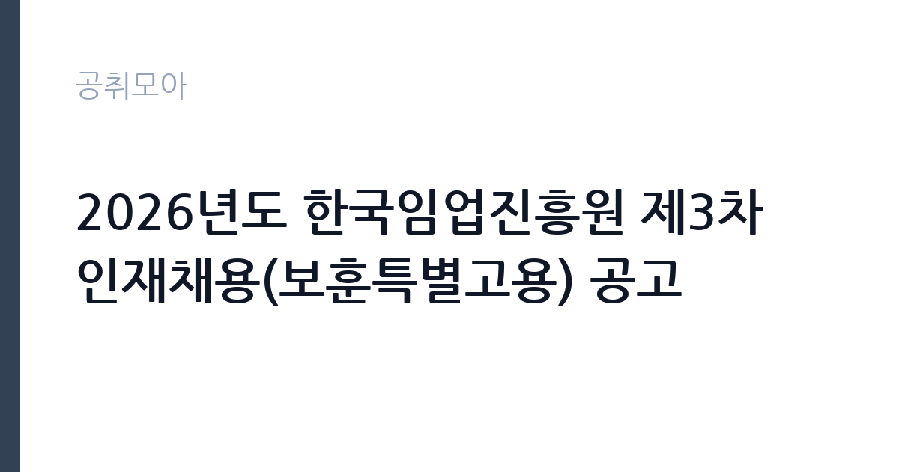

[공공기관] 2026년도 한국임업진흥원 제3차 인재채용(보훈특별고용) 공고
한국임업진흥원 · 대전 · 마감 2026-11-02 (D-22) · 출처 잡알리오

한눈에 보는 모집 조건
| 기관 | 한국임업진흥원 |
|---|---|
| 공고명 | 2026년도 한국임업진흥원 제3차 인재채용(보훈특별고용) 공고 |
| 고용형태 | 정규직 |
| 근무지 | 대전 |
| 게시일 | 2026-10-12 |
| 마감일 | 2026-11-02 (D-22) |
지원자격, 이렇게 읽으세요
- 공공기관 채용공시
- 세부 조건은 원문 공고문 확인
모집분야는 공무직 2급이며, 국가유공자 등 예우 및 지원에 관한 법률 등에 따른 취업지원대상자에 한해 지원이 가능합니다. 취업지원대상자 증명서 제출이 필수이며, 모집분야별 학력과 경력, 자격 요건은 원문 공고문에서 확인하셔야 합니다. 공공기관 채용의 공통 결격사유에 해당하지 않아야 하고, 장애인이나 보훈대상자 우대와 별개로 이 전형 자체가 보훈특별고용임을 기억하십시오.
이 공고의 포인트
이 공고의 핵심은 보훈특별고용이라는 전형의 성격입니다. 일반 공개채용과 분리된 트랙이라 해당 자격자끼리만 경쟁하므로, 요건을 갖춘 분에게는 합격 가능성이 열리는 구조입니다. 한국임업진흥원은 산림청 산하 준정부기관으로, 임업 진흥과 목재이용 활성화, 산림인증과 임산물 유통 지원 같은 고유 사업을 수행합니다. 대전에 본원을 둔 임업 전문기관에서 공무직으로 일하며 정년을 보장받는다는 점이 매력입니다.
전형은 어떻게 진행되나
잡알리오에 공시된 공공기관 채용으로, 진흥원 입사지원시스템에서 원서를 접수합니다. 서류전형과 필기전형, 면접전형을 거쳐 최종 합격자를 선발하는 것이 공공기관 채용의 일반적인 흐름이며, 전형 단계별 배수와 일정은 원문 공고문에서 확인하십시오. 보훈특별고용 전형의 가점과 우대 적용 방식도 공고문에서 대조하셔야 합니다.
원문에서 확인한 전형 방식
공무직(2급)_보훈특별고용 : 「국가유공자 등 예우 및 지원에 관한 법률」 등에 의한 취업지원대상자
이런 분께 추천해요
- 취업지원대상자 증명서를 발급받을 수 있는 국가유공자와 보훈가족입니다. 특별고용 트랙의 문을 두드릴 자격을 갖춘 분에게 맞는 공고입니다.
- 임업과 산림, 목재이용 분야에 관심 있는 분입니다. 진흥원의 고유 사업과 연결되는 전공과 경력이 있다면 서류에서 강점이 됩니다.
- 대전에서 근무가 가능하고 공공기관 공무직으로 안정적인 커리어를 쌓고 싶은 분입니다.
지원 전 체크리스트
- 취업지원대상자 증명서를 발급받아 제출서류에 포함하셨습니까.
- 모집분야의 학력과 경력, 자격 요건을 원문 공고문에서 대조하셨습니까.
- 진흥원 입사지원시스템의 접수 마감시각을 확인하셨습니까.
- 자기소개서와 직무기술서 분량 제한, 파일 양식을 지침대로 맞추셨습니까.
모집 일정과 제출 타이밍
공고 게시일은 2026년 10월 12일이며 접수 마감은 11월 2일입니다. 약 3주의 접수 기간으로 비교적 여유가 있으나, 취업지원대상자 증명서 발급과 자기소개서 작성에 시간을 들이시기를 권합니다. 공공기관 채용은 서류 마감 이후 필기와 면접 일정이 촘촘하므로, 접수와 동시에 전형 준비를 병행하십시오.
직무 이해하기: 공공기관
한국임업진흥원은 임업인의 소득 증대와 임산업 발전을 지원하는 산림청 산하 공공기관입니다. 산림인증과 목재제품 품질관리, 임산물 유통과 수출 지원, 임업인 교육과 컨설팅이 주요 사업이며, 공무직 2급은 각 사업부서의 실무 지원과 민원 응대, 자료 관리 업무를 맡습니다. 임업 현장과 정책을 잇는 실무 조직에서 일하게 됩니다.
자기소개서 작성 팁
자기소개서는 보훈대상자로서의 자긍심과 직무 역량을 함께 보여주십시오. 임업과 산림 분야와 연결되는 경험이 있다면 앞에 배치하시고, 공공기관 직원으로서의 청렴 의식과 봉사 정신을 구체적인 사례와 함께 서술하십시오. 특별고용 전형이어도 직무 적합성 평가의 기준은 동일하므로, 해당 분야 실무 역량을 분명히 드러내셔야 합니다.
면접 준비 포인트
면접에서는 지원 동기와 직무 이해도, 임업진흥원의 사업에 대한 이해를 묻습니다. 진흥원의 주요 사업과 최근 보도자료를 미리 읽어두시고, 본인의 경험이 해당 업무에 어떻게 기여할 수 있는지 설명할 수 있게 준비하십시오. 공직관과 윤리 의식에 대한 질문도 빠지지 않으니 사례를 준비해 두십시오.
급여·근무조건 읽는 법
공공기관 공무직의 보수는 기관 보수규정에 따라 기본급과 각종 수당으로 구성되며, 구체적인 초임 연봉과 수당 체계는 해당 공고문의 보수 조건에서 확인하셔야 합니다. 참고로 진흥원의 올해 상반기 일반직과 공무직 통합채용에서는 초봉 4천만원 수준으로 안내된 바 있으나, 직급과 전형이 다르므로 이번 공고의 정확한 금액은 원문 공고문과 알리오 경영공시에서 대조하십시오.
자주 묻는 질문
- 보훈특별고용은 일반인도 지원할 수 있습니까?
이 전형은 취업지원대상자에 한해 지원이 가능합니다. 일반 공개채용은 별도 공고로 진행되므로 진흥원 입사지원시스템의 채용공고 전체보기에서 본인에게 맞는 전형을 찾으십시오. - 공무직의 정년과 처우는 어떻습니까?
공공기관 공무직은 정년이 보장되는 무기계약 신분으로, 일반직과 같은 복지제도가 적용되는 경우가 많습니다. 정확한 직급 체계와 승급 기준은 진흥원 보수규정과 원문 공고문에서 확인하십시오. - 근무지는 어디입니까?
한국임업진흥원 본원은 대전에 있으며, 모집분야에 따라 지역 조직 배치가 있을 수 있습니다. 정확한 근무지는 해당 공고문의 근무조건에서 확인하십시오.
함께 보면 좋은 공고
[공공기관] 2026년 제6차 국립생태원 기간제근로자(수탁과제) 채용 재공고 — 마감 2026-10-21[공공기관] 한전KDN(주) 대구본부 정보통신설비 유지보수 일용근로자 모집공고 — 마감 2026-10-26[공공기관] 제2026-6회 기초과학연구원 지하실험연구단 박사후연구원 채용 공고 — 마감 2026-11-06출처: 잡알리오 공개정보를 바탕으로 공취모아가 정리한 안내글입니다. 모집 조건·일정은 변경될 수 있으니 지원 전 반드시 원문 공고문을 확인하세요. 본 글은 정보 제공용이며 합격을 보장하지 않습니다.